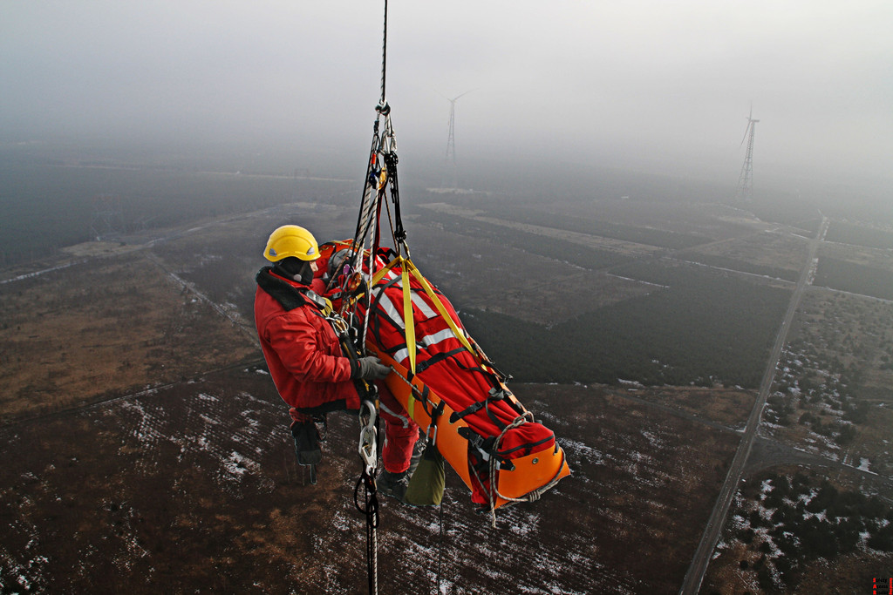
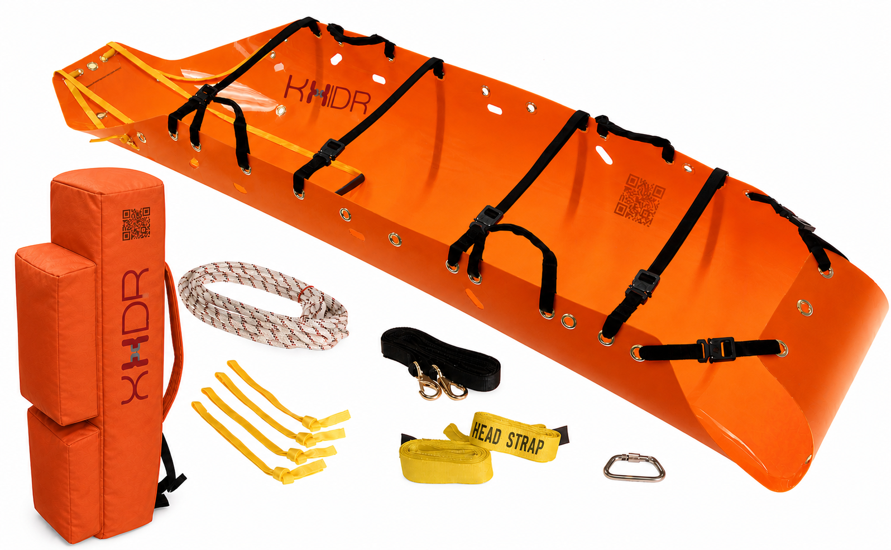

Dar alanlar, yüksek açı tahliyeleri ve zorlu endüstriyel sahalar için tasarlanmış esnek gövdeli kurtarma sistemi. Rulo yapılıp sırt çantasına sığarken, hasta içine yatırılıp kolonlar gerdirildiğinde rijit bir koruma kalkanına dönüşür.


KHIDR K-1, geleneksel rijit sedyelerin giremediği yerlere girmek için tasarlandı. Boşken rulo yapılıp Cordura sırt çantasına sığan esnek MDPE gövde, sahaya ulaşır ulaşmaz hasta altına serilir. Colonlar gerildikçe sistem form değiştirerek hastayı tam anlamıyla saran, hem zeminde sürüklenmeye hem de dikey vinç çekimine dayanıklı rijit bir kabuk oluşturur. −40 °C ile +60 °C arasındaki operasyon aralığı ve kimyasal direnci onu petrokimya, maden ve askeri sahaların vazgeçilmezi kılar.
Kurtarma Kiti
Sistemin kalbi. Yüksek darbe sönümleme kapasitesine sahip, düşük sürtünme katsayılı orta yoğunluklu polietilen (MDPE) levhadan üretilmiş ana platform. Boşken rulo yapılarak 20 cm çap × 94 cm yüksekliğe iner. Hasta içine yatırılıp bağlama kolonları gerildikçe levha form değiştirerek hastayı tam saran, esnemez bir kozalak yapısı oluşturur. Pürüzsüz alt yüzey, engebeli arazide ve dar şaftlarda sürtünmeli sürüklemeyi kolaylaştırır.
Tüm sistem bileşenlerini barındıran, personelin operasyon bölgesine ulaşmak için sırtta taşıdığı yüksek dayanımlı sırt çantası. 1000D Cordura naylon dış yüzey; kesik, aşınma ve yırtılmaya karşı askeri standartlarda direnç sağlar. YKK fermuar ve MOLLE uyumlu harici bağlantı noktaları ile donatılmıştır.
Helikopter vinci (hoist) veya endüstriyel vinç ile yapılan yere paralel (yatay) kaldırma operasyonları için tasarlanmış çift sap sistemi. Yük sedyenin dört noktasına eşit dağıtılarak tüm platform boyunca homojen bir gerilim sağlanır; hastanın bel veya boyun bölgesine lokal baskı oluşması önlenir.
Kuyu, maden şaftı veya bina baca boşluğu gibi son derece dar dikey alanlardan hastayı dik pozisyonda (ayakta durur vaziyette) çekmek için tasarlanmış 9 metrelik yüksek mukavemetli halat sistemi. Bu pozisyon sayesinde sedyenin dar şaft kesitinden geçmesi mümkün olur; standart yatay taşıma ile çıkarılamayacak kurtarmaları gerçekleştirilebilir kılar.
Personelin elleri tamamen serbest (hands-free) kalacak şekilde sedyeyi engebeli arazide arkasından sürükleyebilmesini sağlayan göğüs ve omuz kuşamı. Kurtarmacının vücut ağırlığını ve adım enerjisini doğrudan çekme kuvvetine dönüştürür; uzun mesafe sürükleme operasyonlarında yorulmayı azaltır ve ekip koordinasyonunu artırır.
Sedyenin dört köşesinde ve iki yanında konumlanmış, elde taşımaya imkân tanıyan dokuma kulplar. Kalın polyester kolondan üretilmiş kulplar, grovmet veya Bar-Tack dikiş yöntemiyle gövdeye kalıcı olarak sabitlenmiştir. Çoklu kulp noktaları sayesinde farklı sayıda personel aynı anda güvenle taşıma yapabilir.
Sedyeyi helikopter kancasına, ana kurtarma vinç hattına veya halat sistemine bağlamak için tasarlanmış kilitlemeli çelik D-karabina. Minimum 450 kg (1000 lbs) kopma/yırtılma mukavemeti, vinç ile dikey kaldırma operasyonlarında tam güvenlik sağlar. Vida kilitleme mekanizması istem dışı açılmayı engeller.
Nasıl Yapıyoruz?
Özel formülasyonlu MDPE granülleri ekstrüzyon hattında ergitilerek belirlenmiş kalınlıkta düz levhaya dönüştürülür. Soğuyan levhalar CNC router tezgâhında milimetrik toleranslarla ana sedye kontürüne, halat geçiş delikleri ve kulp bağlantı noktalarına kesilir. CNC işleme; her parçanın aynı geometride üretilmesini ve sistemi birbirine tutan kolonların doğru gerilim açılarıyla çalışmasını garanti eder.
CNC kesimden çıkan levhanın tüm dış kenarları ve özellikle sapan ile halatların geçtiği delik çevreleri ısıl şekillendirme yöntemiyle yuvarlatılıp pürüzsüzleştirilir. Bu kritik adım; yük altında gerilen kolonun keskin bir polimer kenarına sürtünerek kesilmesini veya zamanla aşınmasını önler. Kenar kalitesi, her üretim serisinin başında standart gerilim ve sürtünme testleriyle doğrulanır.
Taşıma kulpları, bağlama kolonları ve sapan noktaları iki yöntemden biriyle gövdeye sabitlenir: (1) Pirinç veya paslanmaz çelik kapsüllü grovmetler, delik kenarlarını çepeçevre sararak kolonun hem gövdeye hem de geçiş noktasına zarar vermesini önler; (2) Endüstriyel Bar-Tack çapraz dikiş dokuma kolonları doğrudan MDPE yüzeyine kilitler. Her bağlantı noktası üretim sonrası dinamometre ile ≥ 450 kg çekme yük testine tabi tutulur.
Veriler
| Ürün Adı | KHIDR K-1 Rulo Tip Dar Alan Kurtarma Sedyesi |
| Seri | Standart |
| Açık Halde Boyutlar | 120 × 250 cm |
| Depolama (Rulo) Boyutları | Ø 20 cm × 94 cm yükseklik |
| Sistem Toplam Ağırlığı | ~8,1 kg (çanta ve tüm donanım dahil) |
| Min. Kopma / Yırtılma Mukavemeti | ≥ 450 kg (1000 lbs) |
| Gövde Malzemesi | Özel Formülasyonlu MDPE |
| Taşıma Çantası | 1000D Cordura® Naylon |
| Dikey Tahliye Halatı | 9 m |
| Çalışma Sıcaklığı | −40 °C … +60 °C |
| Kimyasal Direnç | Petrol türevleri, asitler, kostik sıvılar |
| D-Karabina Kopma Yükü | ≥ 450 kg |
Sertifikalar & Uyumluluk
Kişisel koruyucu ekipman ve kurtarma araçları direktifi uyumlu.
Kalite yönetim sistemi sertifikasyonu; tüm üretim süreçleri kapsamında.
Dikey ve yatay tahliye sapanlarının kopma yükü ve geometri gereksinimleri standardı.
İtfaiyecilik ve teknik kurtarma halatları standardına göre kopma yükü doğrulaması yapılmıştır.
Türkiye Afet ve Acil Durum Yönetimi Başkanlığı dar alan ve teknik kurtarma ekipman listesinde onaylı.
Nerede Kullanılır?
Rüzgar türbinleri, silolar, boru hatları, gemi makine daireleri ve fabrika kazanları.
Sarp arazilerde helikopter vinci veya halat sistemiyle yatay ve dikey tahliye.
Çatışma bölgelerinde yaralı tahliyesi; zırhlı araç dar kapılarından çıkarma.
Çöküntü tehlikesi olan göçük operasyonlarında dar şafttan dikey çekiş.
Kimyasal direnç ve yüksek ısıl aralığıyla endüstriyel acil tahliye standardı.
Teknik sorularınızı yanıtlıyoruz ve ihtiyacınıza özel çözüm üretiyoruz.